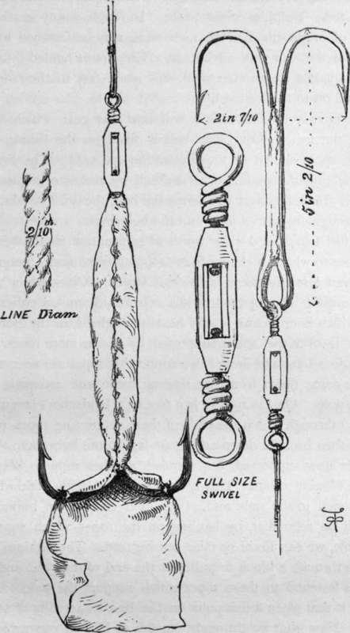

The Ocean Fishing Rod. Part 2
Description
This section is from the book "Sea Fishing", by John Bickerdyke. Also available from Amazon: Sea Fishing.
The Ocean Fishing Rod. Part 2
Captain Howell always uses two hanks of stout log line, at the end of which there is a swivel; through this he reeves a galvanised wire trace about two fathoms long. The hook is double (made according to his own idea) on one shank six inches long, with a swivel attached to it. Upon the shank of this is the bait, which consists of white rag, bound round in the shape of a fish, the ends being allowed to form a tail about two inches long beyond the hooks, and in this is sometimes put a little red. Dolphin prefer white. In rough, sunny weather a strip of bright tin, half an inch wide, may be fastened to the back of the bait with advantage. The line is hauled into the ship's quarter by another small line made fast to the rail and hitched on to the fishing line.
THE OCEAN BAIT (CAPT. HOWELL'S).
It is easy to introduce a bell into this gear, which rings when the fish strikes. The bell is fixed on the fishing line at the spots shown in the illustration (p. 317). The line is slightly pulled together over the bell by means of a piece of twine. Immediately a fish seizes the bait, the twine breaks, the line straightens with a jerk, and the bell rings.
I feel I must add a few words of explanation for the benefit of those to whom such words as ' topping lifts ' and ' foreguys' are even less understandable than Greek. Obviously a huge pole cannot be projected over a vessel's side unless either the end which is on board is very heavily weighted, or the portion which is over the sea is supported by one or more ropes. If the pole is long and limber two supporting ropes are necessary. These come down from the rigging above and are made fast to the pole. On the rigging is a block (in landsman's language, pulley) through which the ends of these supporting ropes pass, being then brought down and made fast to the bulwarks. The pole is now supported, but requires another rope to keep it from swinging about. This is the foreguy, a single rope which is fastened to the pole and, at its other end, to the bulwarks. It will be seen that, by hauling on the ropes which support the pole, we can lower or raise our big rod. The fishing line passes through a block or pulley at the end of the pole, and its end is fastened to these ropes which support the pole. The result is that when a fish pulls on the line he actually lifts the pole. Now what weight ought our fish to lift—in other words, what strain ought to be placed on the fishing line ? Captain Howell says, decide this by using a spring balance in the manner he has directed, or by fastening a weight of 200 lbs. on to the ends of the ropes by which the pole is sustained. He shifts the pole until he finds the 200-lb. weight will just raise up the rod and no more. The pole is then marked where it rests on the edge of the bulwark or rail, so that it can always be placed in the same position without further reference to spring balance or weight. It should be particularly noted that the fishing line is practically a continuation of the ropes which support the pole, so that the fish which is hooked simply hauls up the pole a little. The ropes which support the pole (boom) are the topping lifts, and, as I have explained, the rope which keeps the pole from swinging towards the stern is the foreguy.
I trust the foregoing explanation will suffice even for landsmen. I have made it perhaps unduly elaborate, finding that most people have much difficulty in understanding the construction of this clever invention.
I may here gratefully acknowledge much kind assistance given me with this part of the subject by Captain Howell, who thus expresses himself on ocean fishing :
There is nothing expensive about the gear, and the whole thing is very simple when you understand how to rig it up. It does seem a pity that so many men should go on ploughing the ocean year after year under the impression that it is quite impossible to catch fish from a steamer under way. Apart from the sport itself, nothing can be more welcome to crew and passengers than fresh fish put on the table in hot weather. I know my own passengers have often been able to eat fresh fish when they could not look at meat in the tropics.
It has occurred to me that possibly an arrangement of india-rubber could be invented to bear the first jerk of the fish ; such a tackle, for instance, as that occasionally used in connection with the main sheet of a cutter yacht. But one object of the long boom, be it remembered, is to keep the bait and line away from the side of the ship. I believe this might be done by means of an otter board. The experiment is worthy a trial.
But what is generally available is a long spar, or, at any rate, a stout oar, and this latter has been used with some success by Lieutenant-Commander E. Hunter-Blair, who, like Captain Howell, is a very successful ocean fisherman, though his fish were probably caught while the vessel was going at a comparatively low rate of speed. Above nine knots Captain Howell's gear is certainly to be preferred. This gear was also described in the ' Field,' and in the following words :
Lash the loom of a large ash oar to a boat's afterdavit, as high from the water and as far out from the ship's side as possible. Secure an ordinary 20-fathom lead line to the end of the blade of the oar, leaving sufficient of the line to form a foreguy to lead to the foremost davit; continue the lead line with thirty to forty fathoms of window-sash cord ; next a snooding six fathoms long, best made of three wires, unlayed from a piece of two-inch steel wire hawser. The wire must be secured to the hook without any sharp bend whatever.
Fish in foreign seas—in home waters they seem more timorous—are sometimes caught right under the vessel's counter, or ahead of the bow, by lines trailing from the jibboom.
The wire snooding for this purpose is as often as not made from one to seven or even eight strands unravelled from a galvanised, steel wire, twisted cable. A good hook for the purpose is not easily obtained, nothing special being usually made, so far as I know, which will stand the enormous strain. The hooks and bait kindly lent me by Captain Howell for the use of the artist (see p. 319) were made by Messrs. Farlow & Co. An ordinary shark hook, about one-third the usual size, will answer the purpose ; but it must be of first-rate steel, and may be larger or smaller according to the size of the fish expected. The hooks should be long in the shank, and fitted with an eye and swivel.
Continue to:
Tags
fishing, hooks, bait, fishermen, spanish mackerel, mackerel fishing